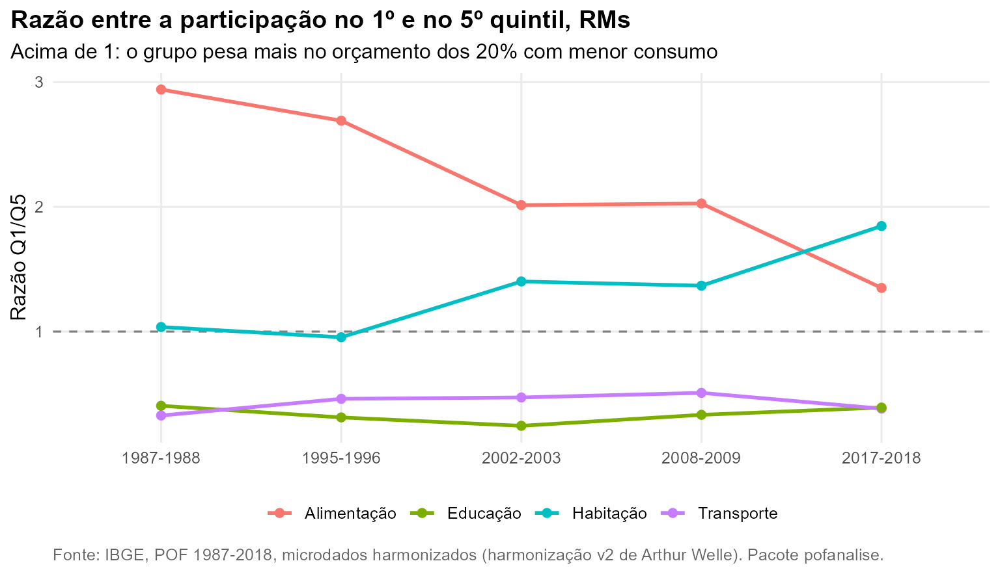

Esta página cruza as sete análises e reúne os resultados que aparecem
em mais de uma delas. Todos os números vêm das tabelas de
pof_resultado(). Para explorar os resultados por conta
própria, use o painel interativo.
O que se repete entre as análises
1. O peso relativo dos mais pobres saiu da comida e foi para a moradia
A razão entre a participação no 1º e no 5º quintil cai de 2,94 para 1,35 na alimentação e sobe de 1,04 para 1,85 na habitação sem aluguel. Aparece em Quintis e curvas de Engel e em Habitação e transporte.

2. A curva de Engel achatou, e as refeições prontas ajudam a explicar
A alimentação pesa 21,9% do consumo do 1º quintil e 23,0% do 4º em 2017-2018, contra 46,6% e 28,9% em 1987-1988. No mesmo período, a folha “Refeição” passa de 9,1% para 31,4% do gasto alimentar. Ver Composição da alimentação.
3. Serviços privados crescem no orçamento e seguem concentrados no topo
Saúde e educação chegam a 10,6% e 7,4% do consumo sem aluguel em 2017-2018, mas o plano de saúde está em 3,4% das UCs do 1º quintil e 55,9% das do 5º. A exceção é o curso superior pago, que se espalha pelos quintis do meio: no 3º quintil, de 1,2% para 5,7% das UCs. Ver Saúde e educação.
4. Menos desigualdade, com a mesma hierarquia
O Gini do consumo no Brasil cai de 0,540 para 0,503 entre 2008-2009 e 2017-2018, mas o consumo per capita relativo por cor quase não muda: 132,6 e 62,7 em 2002-2003; 134,7 e 70,7 em 2017-2018 (média = 100). Ver Desigualdade do consumo e Perfil da unidade de consumo.
Confiabilidade
Com a harmonização v2 e as correções de pof_correcoes(),
10 dos 10 grupos de despesa ficam a menos de 1,5 ponto percentual dos
números oficiais do IBGE em 2017-2018. Os detalhes estão em Harmonização de produtos; a comparação
completa, item a item e por recorte, está em Validação com os números oficiais do
IBGE, onde o número de famílias estimado coincide com o oficial nas
duas edições. Três limites valem para todas as análises:
- Recorte. Comparações com 1987 e 1995 só nas regiões metropolitanas.
- Aluguel. O aluguel imputado só existe de 2002 em diante; as comparações entre as cinco edições o excluem.
- 1987-1988. Habitação sem aluguel e educação parecem subestimadas nessa edição; trate-a como referência aproximada.
As análises
| Análise | Pergunta |
|---|---|
| Estrutura do orçamento | Como o consumo se distribui entre os grandes grupos? |
| Quintis e curvas de Engel | Como o peso de cada grupo varia com o nível de consumo? |
| Composição da alimentação | O que mudou na cesta alimentar? |
| Habitação e transporte | Como evoluíram aluguel, energia, telefonia, ônibus e veículo? |
| Saúde e educação | Quem gasta do próprio bolso com saúde e educação? |
| Desigualdade do consumo | A desigualdade do consumo diminuiu? |
| Perfil da unidade de consumo | Como o consumo varia com sexo, idade, cor e tamanho da UC? |
| Progressividade dos gastos | Quais gastos pesam mais para quem consome menos? |
| O que mudou de 2008 para 2017 | Quais mudanças no orçamento são estatisticamente significativas? |
| Comportamento ou composição? | Quanto das mudanças vem do envelhecimento e da redução das famílias? |
| Jogos e apostas | Quem gasta com apostas, e qual a linha de base antes das apostas online? |